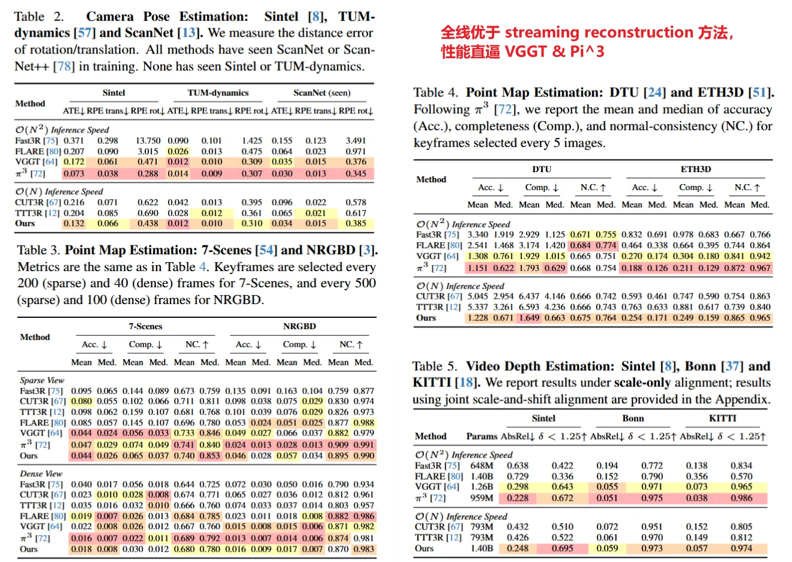
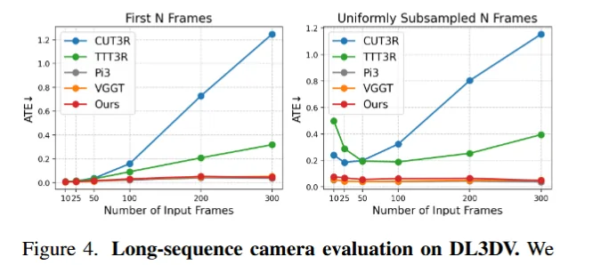
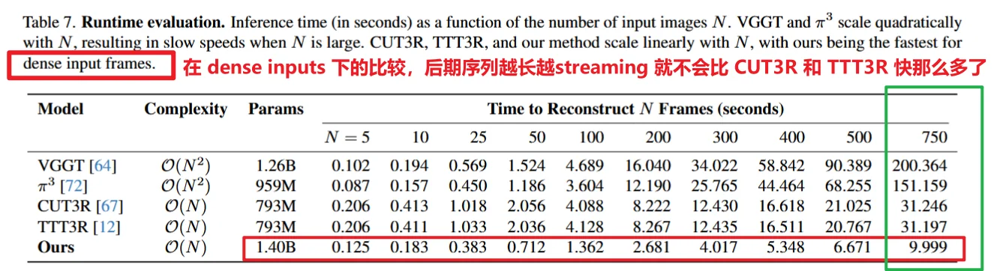
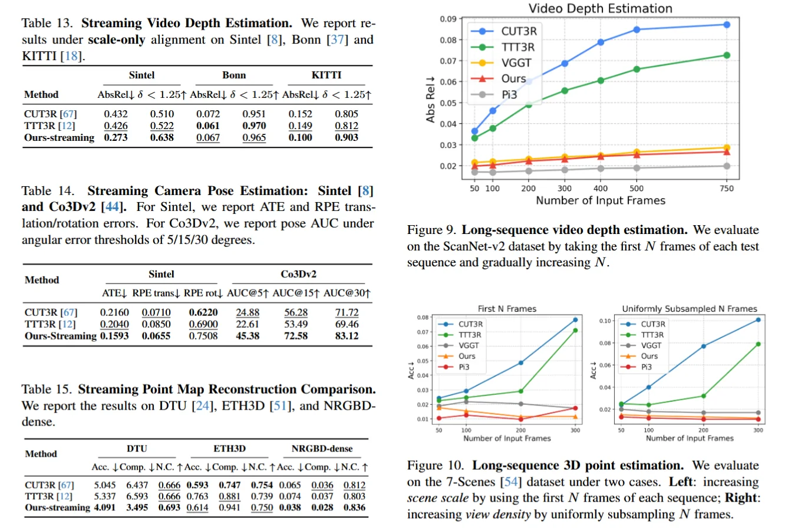

Feed forward （streaming 可选）reconstruction & NVS
streaming 是 offline 而不是 online
用 LaCT 代替 VGGT 中的 global attention，把整个图像序列压缩进 fast-weight scene state，在 O(N) 的复杂度下实现了近似 VGGT / \(\Pi^3\) 的效果。
线性方法中最强，性能接近复杂度平方的方法。
1. pipeline
输入：一组图像 or 视频帧，还可以选择输入 target raymap（查询 fast weights 中形成的隐式 scene representation）
输出：pose + depth + pointmap + NVS
n inputs -->
DINO v2 -->
patch tokens + camera token -->
[ (24 LaCT blocks)
window attention -->
K,V projection -->
fast weights update -->
Q projection & query fast weights(apply) -->
]
fast weights --> head -->
depth + pointmap + pose
## NVS 工作流
target camera
ray map
patchify + query token
query
head
nvs2. method
TTT 替代 global attention
一个纯粹的将 TTT 替代 transformer global attention 的工作：
- q,k,v 投影
- 用 key-value reconstruction 构造 test-time objective: \(L(f_W(k_i),v_i) = -f_W(k_i)^T v_i\) ,这儿不是3D reconstruction 的 loss 是为了让 TTT-MLP 在当前输入集合上形成记忆。（fast weights）
- 对 \(W\) 做一次梯度更新，并且通过归一和正则来稳定 Test Time Training
chunk 内的 local window attention 对每个 view 独立做 intra-view self-attention，不发生 view-to-view token attention。 没有显式的 frame-to-frame attention 交互，而是把所有 frames 的 token 写到同一个 TTT-MLP 中，每个 frame 的 token 再从这个共享的 state 读取信息，从而 隐式实现了 window 内的信息交互。
backbone
24 层 LaCT，每一层有:
- local windown attention : 单 view 内做 self attention 捕捉局部空间和几何结构
- global large chunk TTT layer :跨 view 进行信息交互，形成上下文记忆写入 TTT-MLP
3. results
训练资源
1.40B 参数 / 64 张 H100 / 三阶段 / 29 个数据集，还复用了 VGGT dinov2 encoder 和部分 attention 初始化
pose + pointmap + depth

长序列 pose 估计

运行速度远超 TTT3R
为什么能这么快？
比 CUT3R / TTT3R 快三倍，主要来自 batch bidirectional ZipMap，不是 necessarily 来自它的 streaming variant。快的关键是一次性 large-chunk batched update，而真正逐帧 streaming 后，这个并行优势会减少。

可扩展到 streaming reconstruction
scene state query 和 streaming reconstruction 都有专门的 finetuning 流程。
针对 streaming reconstruction 的微调，需要 fine tune stage3
zipmap 的 streaming 是 offline 的 batch streaming-like，而不是 online streaming。像离线论文评测中的逐帧回放式 streaming，不是完整实时在线 SLAM / reconstruction 系统。
初始化 fast weights W(0)
for t = 1, 2, 3, ...:
输入当前帧 I_t
DINO / patch tokens
每层：
当前帧内部 local window attention
用当前帧 K/V 更新 W(t-1) → W(t)
当前帧 Q 从 W(t) 读取 scene state
输出当前帧 camera / depth / point mapchunk 在 streaming 版本里不是多帧 chunk，而是 一帧 的 patch tokens 的集合，一个 view-level update chunk。而不是缓存 24 帧之后一起 update。

具体实现里面是先 update 还是先 apply 的？理论上讲先 update 再 apply 肯定是效果更好，因为它反正也不追求 streaming
4. limitations
- 超长序列下会退化：当测试序列的 scene scale 远超训练分布
- NVS 的高频区域不行，不能胜任高质量的 NVS 任务
- 尽管是 TTT-MLP 但这个记忆还是不够充足；
- 训练成本太高；
- Query / streaming 依赖额外 finetuning
Questions
具体实现里面是先 update 还是先 apply 的？理论上讲先 update 再 apply 肯定是效果更好，因为它反正也不追求 streaming
answer:
update 在前，apply 在后。先用整段输入 tokens 更新 fast weights，然后再用更新后的 fast weights 去 apply 到 tokens 上
aggregator_ttt.py:
ttt_op_order = [
# 用所有 tokens 的 K/V 更新 fast weights
TTTOperator(start=0, end=-1, update=True, apply=False),
# 用更新后的 fast weights 作用到所有 Q 上
TTTOperator(start=0, end=-1, update=False, apply=True),
]- offline reconstruction 是全序列先 update，再全序列 apply；
- scene query 是 input tokens 先 update，然后 input+query tokens apply；
- streaming/window 模式才是按 chunk 做 update→apply。但是这个情况下应该把 window size 设置为 1，否则在 window 内就不是严格因果的了。若 window_size>1，则 chunk 内的所有 frames 先共同更新 fast weights，再共同 apply，那 chunk 内不是因果的，而是 block-wise / chunk-wise streaming。